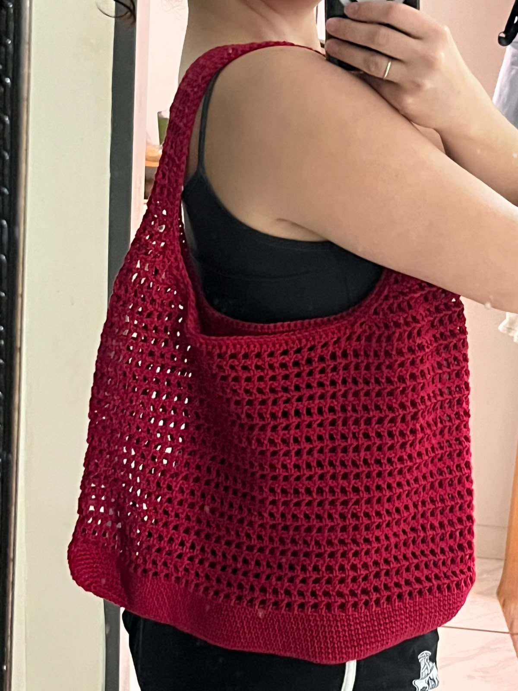
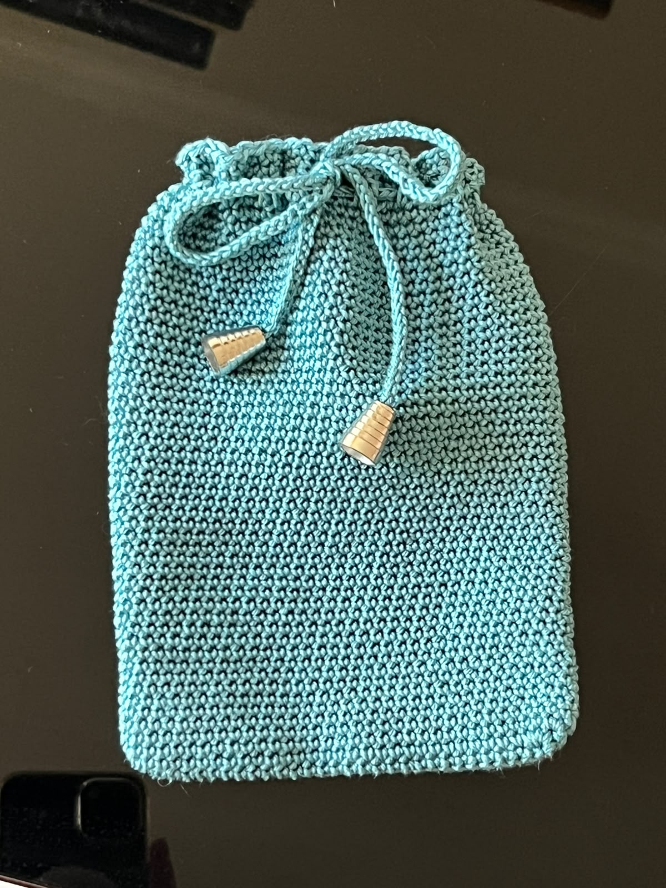
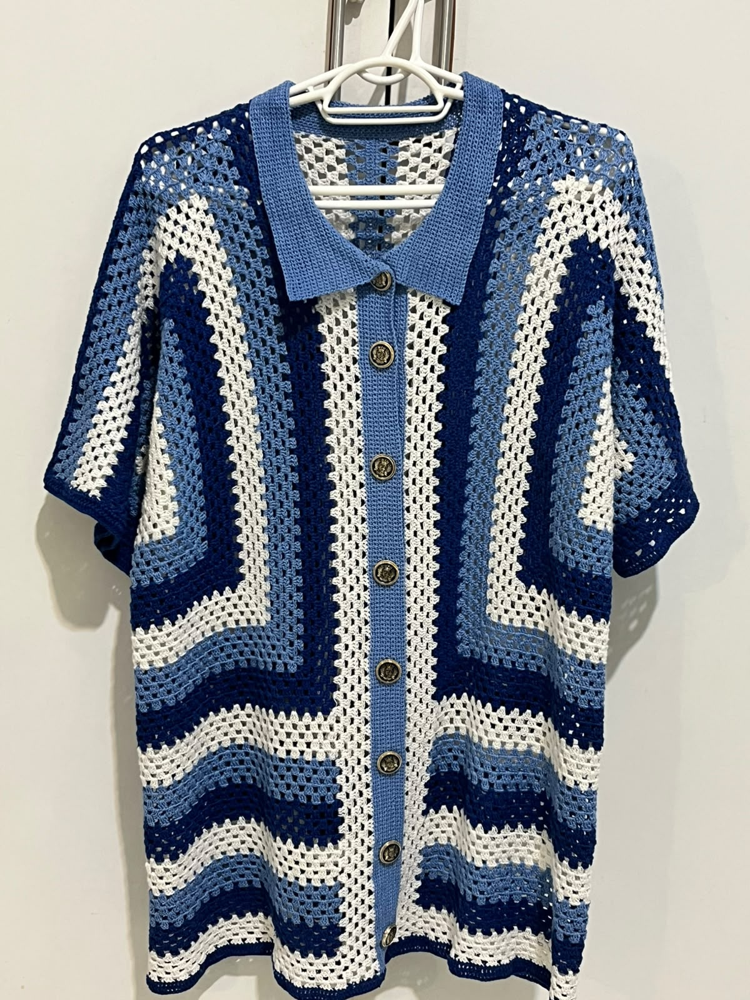
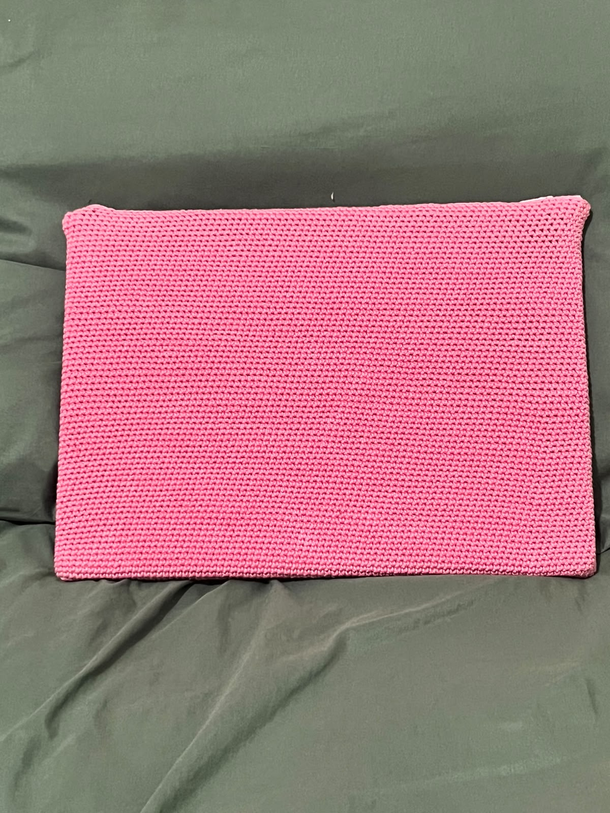
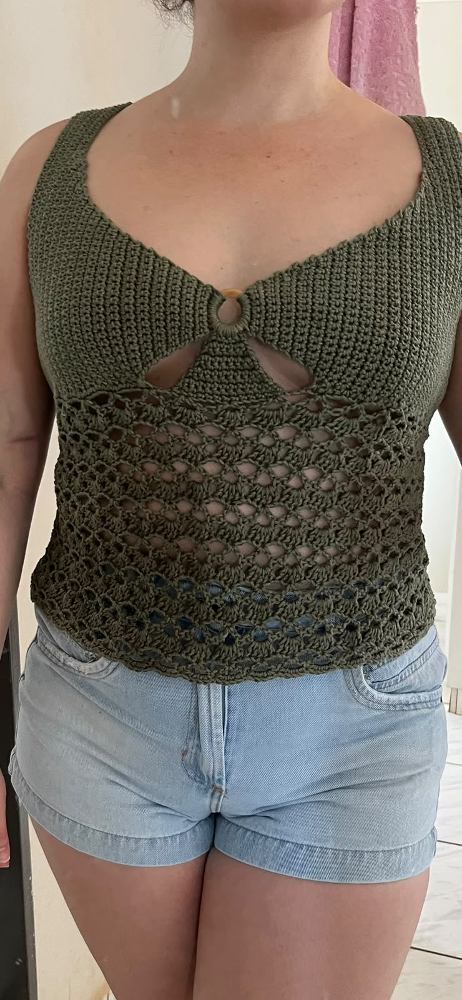
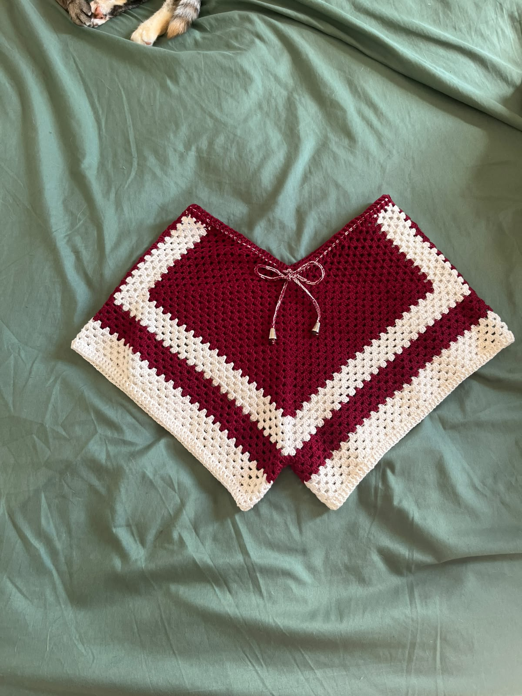
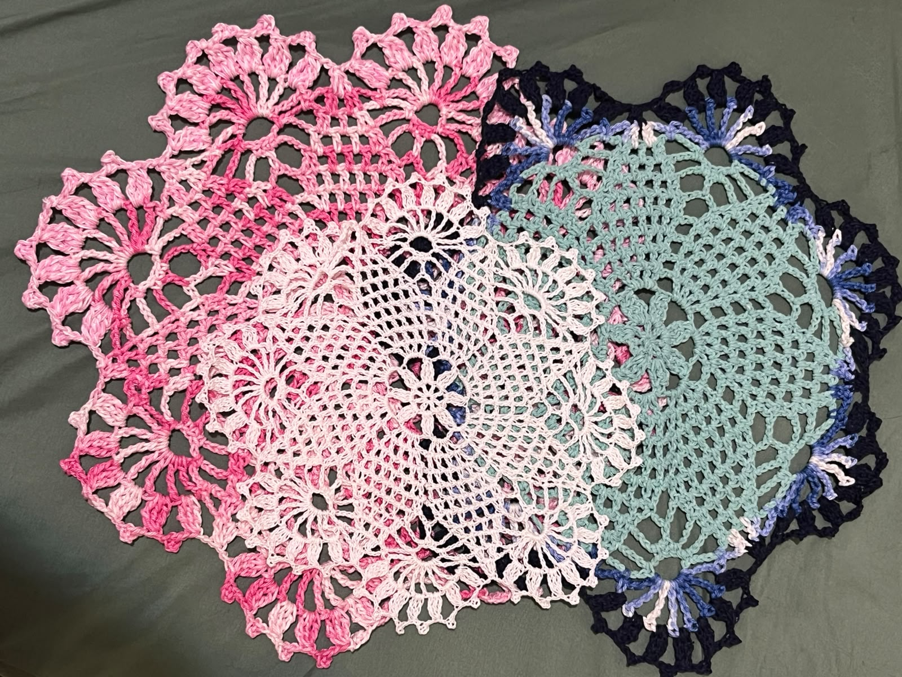

Cultivamos a essência e a calma de técnicas manuais tradicionais. Cada ponto é criado pacientemente pela artesã Graziele Monteiro, resultando em peças exclusivas e cheias de identidade.
Trabalhos únicos feitos sob medida. Escolha o seu modelo favorito e fale diretamente com a artesã para tirar dúvidas e encomendar.
Exclusiva

Bolsa Carmim em Crochê
Bolsa estruturada em crochê manual com ponto relevo e acabamento impecável. A elegância do artesanal para qualquer ocasião.
Delicada

Bolsinha Clutch Natural
Clutch delicada confeccionada em fio macio e ponto fechado. Compacta, charmosa e versátil para carregar seus itens essenciais.
Vestuário

Camisa Crochê Artesanal
Camisa exclusiva com padronagem vazada geométrica. Conforto térmico, toque macio e caimento fluido com alma atemporal.
Acessório

Case para Notebook e Tablet
Capa protetora em crochê encorpado que protege seus eletrônicos com suavidade, estilo e autenticidade.
Vestuário

Regata Crochê Verde Oliva
Regata de alças com trama artesanal fresca e moderna. Perfeita para composições leves, elegantes e autorais.
Vestuário

Shorts Bicolor em Fios Naturais
Short artesanal com blocos de cor em vermelho e off-white. Cintura com ajuste e textura suave para os dias de sol.
Mesa Posta

Sousplat Artesanal Mesa Posta
Sousplat trabalhado em pontos clássicos circulares. Transforma momentos ao redor da mesa com carinho e tradição.
🧶
Sobre a Artesã
[inserir texto aqui]
O ateliê Sea Salt Artesanato nasce da dedicação às agulhas, aos fios e ao tempo do feito à mão. Cada criação carrega o cuidado e a sensibilidade de quem transforma nós em arte para acompanhar a sua rotina com aconchego e exclusividade.